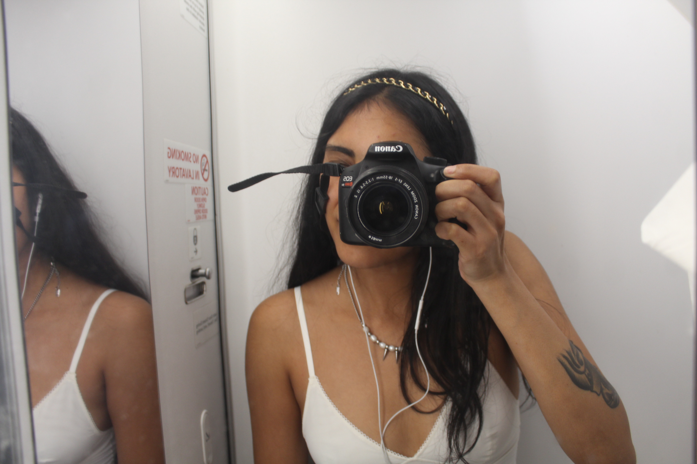

Iqra V Sheikh
homeHi, my name is Iqra Sheikh and I am a photographer interested in documenting both rural and urban life of America. Some of my influences are Paul Strand, Robert Frank, Robert Cappa, Diane Arbus, and Margaret Bourke-White. For my educational background, I carry both a Masters of The Arts and Bachelor of The Arts in Art History from CUNY.
